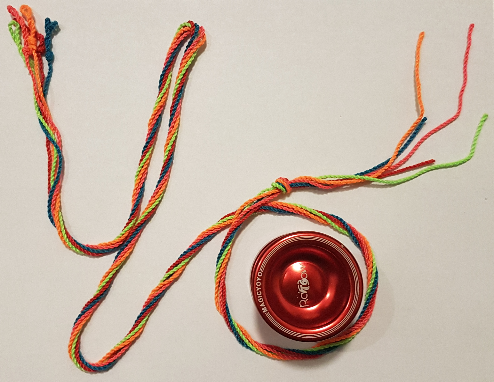
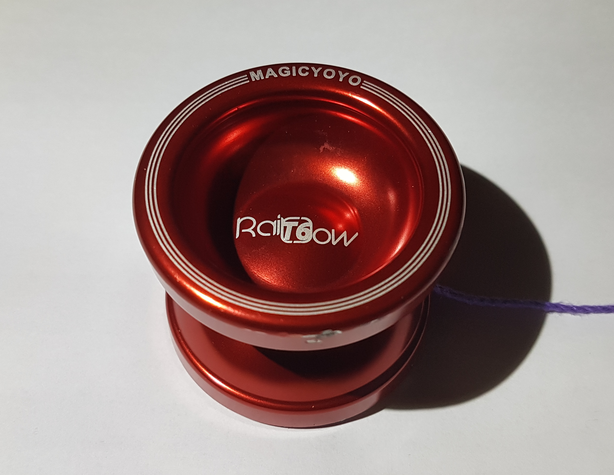
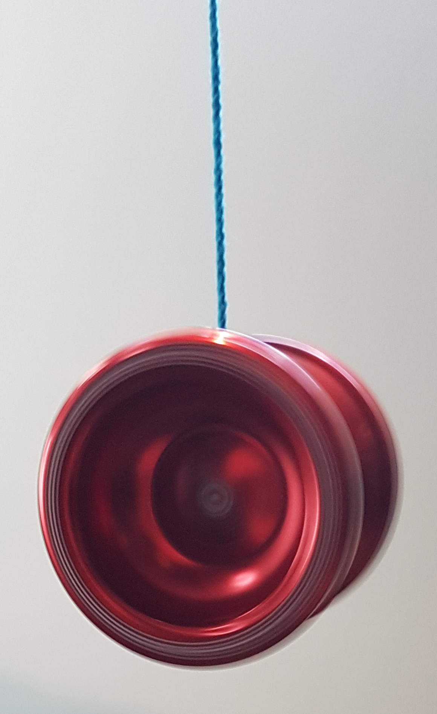
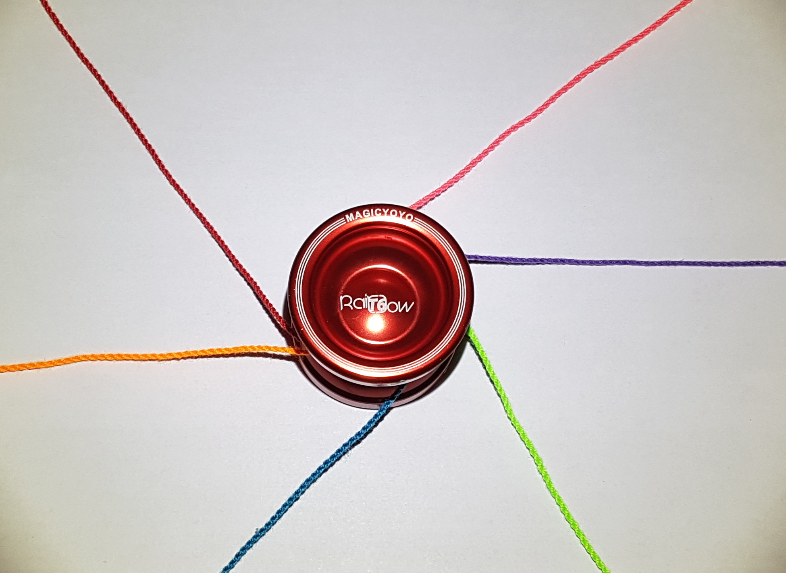
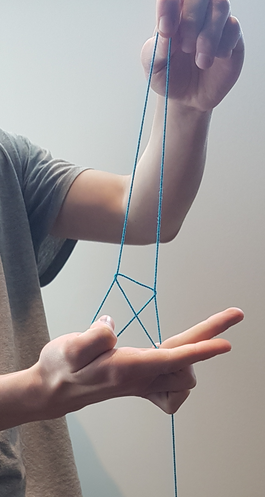
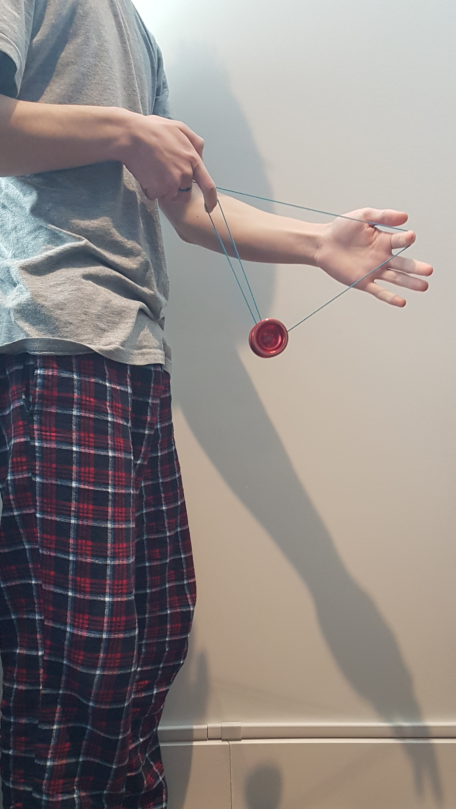
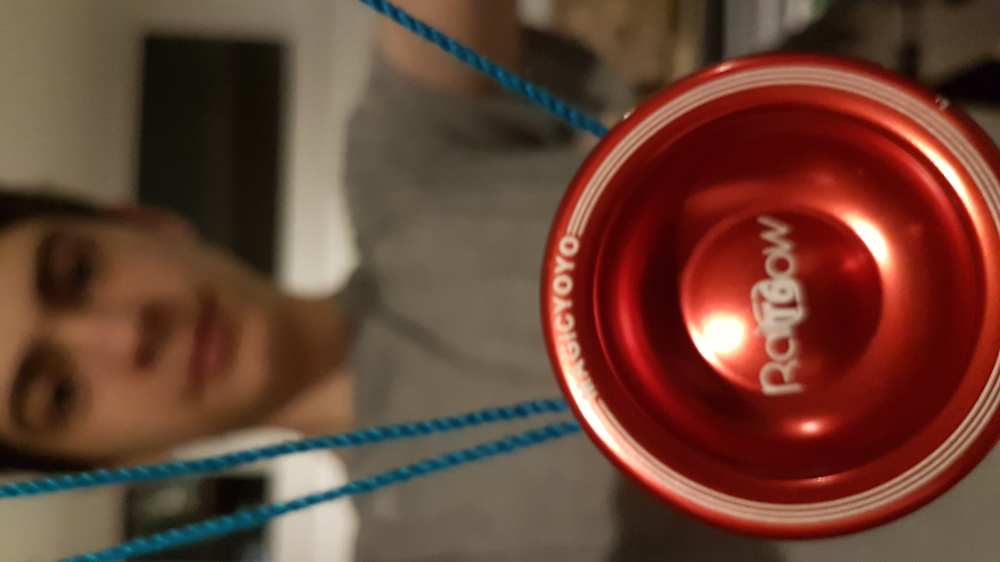

Photography
Yo-Yo :: I tried to throw mine away, but I couldn‚Äôt. ü™Ä ‚ù§Ô∏è

A fun, easy to pick up hobby that will last a lifetime. Yo-Yo-ers come in all shapes and sizes, with no barrier to entry. If you’ve ever thought of picking up the hobby or it’s even a possibility, I guarantee this article will inspire you to go for your first throw and try your first trick! Although any yo-yo will work, there is a special kind of yo-yo that unlocks a pandora’s box of new tricks you can do. This is called an unresponsive yo-yo. Here is a photo of mine:

The term unresponsive refers to the fact that it won’t come up when you tug on the string. This is intended behavior (no the yo-yo isn’t broken). This unresponsiveness allows you to do some faster paced tricks without running the risk of the yo-yo coming back up mid-trick. What about bringing the yo-yo back up, I hear you ask? In order to bring the yo-yo back up, called binding, all you need to do is wrap your string-hand around the yo-yo and pull up quickly. Here is an image of the yo-yo spinning at the bottom of the string:

Some easy tricks to get started with yo-yo-ing are called string tricks.

No, not like this.
These are tricks that don’t involve the yo-yo at all! All you have to do is throw the yo-yo, then shape the string into any shape you want! Here is a picture of the “Eiffel Tower” string trick:

The next important step is learning the main positions. These include the forward half mount, breakaway mount, double forward mount, etc. Here is a photo of the forward half mount:

The next time you are at your local hobby store or need something fun and refreshing to do, maybe consider picking up a yo-yo!
